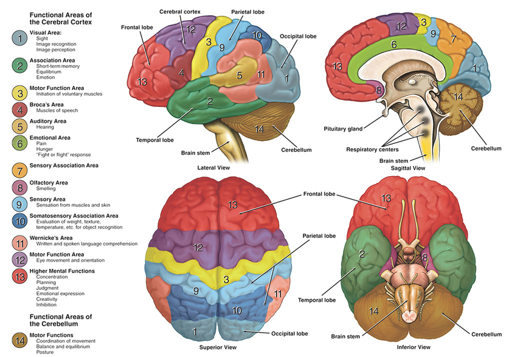

Bozza parziale · Corso di geriatria – Educazione Professionale
Processi che ci permettono di:
e di guidare il comportamento nella vita quotidiana.
Attenzione
seguire una conversazione in un ambiente rumoroso
Funzioni esecutive
organizzare una spesa, pianificare, cambiare strategia
Memoria e apprendimento
imparare nuove informazioni, ricordare un appuntamento
Linguaggio
trovare una parola, comprendere una frase
Percezione e movimento
orientarsi, riconoscere un volto, usare un oggetto
Cognizione sociale
comprendere emozioni, intenzioni e norme sociali
| Dominio | Alcune funzioni | Esempio quotidiano |
|---|---|---|
| Attenzione complessa | sostenuta, selettiva, divisa; velocità di elaborazione | seguire una conversazione in un ambiente rumoroso |
| Funzioni esecutive | pianificazione, decisione, inibizione, flessibilità, memoria di lavoro | organizzare una spesa o cambiare strategia |
| Apprendimento e memoria | apprendere, ricordare eventi e conoscenze | ricordare cosa è successo ieri; sapere cos’è un oggetto |
| Linguaggio | produzione, denominazione, comprensione | trovare una parola o capire una frase |
| Percettivo-motorio | visuospaziale, riconoscimento, prassia | orientarsi, riconoscere un volto, usare un oggetto |
| Cognizione sociale | emozioni, intenzioni, norme sociali | capire che qualcuno è ironico o arrabbiato |
| Termine | Significato essenziale |
|---|---|
| Memoria episodica | eventi vissuti, collocati nel tempo e nello spazio |
| Memoria semantica | conoscenze, concetti e significati |
| Memoria di lavoro | mantenere e manipolare temporaneamente informazioni |
| Prassia | eseguire gesti e azioni apprese |
| Gnosia | riconoscere ciò che viene percepito |
| Prosopagnosia | difficoltà specifica nel riconoscere i volti |
| Abilità visuospaziali | elaborare posizione, distanza e relazioni nello spazio |

Temporale mediale / ippocampo
apprendere nuovi ricordi
Aree temporali
linguaggio e conoscenze semantiche
Aree frontali
pianificazione e controllo
Aree parietali e occipitali
elaborazione visuospaziale
vedere il volto → riconoscerlo → associarlo a informazioni → recuperare il nome
Una funzione può alterarsi perché:
neurone funzionante → disfunzione → perdita di connessioni e neuroni
Nel cervello adulto la sostituzione dei neuroni perduti è insufficiente a compensare il danno.
Se si deteriora una rete, diventano meno efficienti le funzioni che quella rete sostiene.
Reti della memoria
difficoltà ad apprendere nuove informazioni
Reti frontali
pianificazione o comportamento
Reti linguistiche
produzione o comprensione delle parole
| DNC minore | DNC maggiore | |
|---|---|---|
| Cognizione | declino modesto in ≥1 dominio | declino significativo in ≥1 dominio |
| Evidenza | preoccupazione documentata + valutazione cognitiva | preoccupazione documentata + valutazione cognitiva |
| Indipendenza | conservata | interferenza con l’indipendenza |
| Nella pratica | più tempo, sforzo, strategie o adattamenti | aiuto necessario almeno nelle attività complesse |
Dobbiamo stabilire se e quanto il deficit cognitivo interferisce con la vita quotidiana.
declino rispetto a prima
+ deficit cognitivo oggettivabile
+ indipendenza sostanzialmente conservata
La persona può essere più lenta, fare più fatica o usare strategie compensative.
Alla rivalutazione non soddisfa più i criteri
Il deficit persiste senza progressione evidente
Il declino aumenta e può compromettere l’indipendenza
Maria, 78 anni.
Da circa un anno dimentica alcuni appuntamenti.
Usa molti promemoria.
La figlia riferisce qualche errore recente nelle bollette.
Dimentica appuntamenti → possibile cambiamento cognitivo
Usa promemoria → possibile compensazione
Errori nelle bollette → possibile impatto funzionale
Ma dobbiamo ancora capire:
è un vero declino? · è oggettivabile? · compromette l’indipendenza? · qual è la causa?
| Ambito | Condizioni o fattori da considerare | Possibili effetti |
|---|---|---|
| Psiche e umore | depressione, ansia | concentrazione, attenzione, rallentamento, memoria |
| Endocrino / metabolico | ipotiroidismo; disnatriemie; ipo/iperglicemia; ipercalcemia; uremia; disfunzione epatica | rallentamento, alterazioni attentive/cognitive, possibile delirium |
| Farmaci e sostanze | benzodiazepine, anticolinergici, sedativi; consumo eccessivo di alcol | sedazione, attenzione, memoria, delirium |
| Carenze nutrizionali | vitamina B12; deficit di tiamina/B1 | deficit cognitivo; encefalopatia di Wernicke nel contesto appropriato |
Possono causare, mimare o aggravare un disturbo cognitivo e possono coesistere con una neurodegenerazione.
| MMSE | MoCA | SPMSQ | |
|---|---|---|---|
| Tipo | screening breve | screening breve | screening molto breve |
| Campiona | orientamento, memoria, attenzione/calcolo, linguaggio, prassia | memoria, attenzione, esecutivo, visuospaziale, linguaggio, astrazione, orientamento | orientamento, memoria/conoscenze, calcolo semplice |
| Punto di forza | diffuso; impairment più evidente | più sensibile alle alterazioni lievi ed esecutive | rapido e semplice |
| Limite | meno sensibile a MCI/esecutivo | rimane uno screening | copertura cognitiva limitata |
Il risultato dipende anche da:
età · scolarità · lingua e cultura · vista e udito · stato emotivo · condizioni acute
La diagnosi integra cognizione, funzionamento quotidiano, storia, clinica e andamento nel tempo.
Esordio insidioso e progressivo
Forma tipica:
Possibili anche esordi linguistici, visuospaziali o esecutivi.
Progressivo coinvolgimento di più domini:
memoria
→ linguaggio, orientamento, visuospaziale, esecutivo
→ perdita delle IADL
→ BADL e dipendenza crescente
La presentazione amnestica è la più comune, ma Alzheimer non significa “solo memoria”.
Spesso precocemente:
La memoria può essere meno compromessa all’inizio.
Malattia progressiva con marcate fluttuazioni.
Nel tempo possono aumentare:
Importante la possibile sensibilità grave agli antipsicotici.
Comportamento / personalità · bvFTD
disinibizione · apatia · perdita di empatia · rituali · alterazioni alimentari · deficit esecutivi
oppure
Linguaggio · afasie primarie progressive
produzione o comprensione progressivamente compromesse
Il deficit inizialmente più circoscritto coinvolge progressivamente altre funzioni e compromette:
In alcune forme compaiono disturbi motori.
La memoria episodica può essere relativamente conservata nelle fasi iniziali.
Molto eterogenea: dipende da sede ed estensione del danno.
Frequenti:
La memoria non deve predominare.
Ictus / infarto strategico
→ esordio relativamente brusco
Eventi ripetuti
→ possibile andamento a gradini
Malattia dei piccoli vasi
→ deterioramento anche lento e progressivo
“Vascolare” descrive una causa, non un unico profilo clinico.
| Sindrome | Segnale iniziale da ricordare | Decorso caratteristico |
|---|---|---|
| Alzheimer | nuove informazioni / memoria episodica | insidioso e progressivo |
| Corpi di Lewy | fluttuazioni + visuopercezione ± allucinazioni/parkinsonismo | progressivo, ma molto fluttuante |
| Frontotemporale | comportamento oppure linguaggio | ampliamento progressivo ad altre funzioni |
| Vascolare | esecutivo/rallentamento, ma variabile | brusco, a gradini o lentamente progressivo |
| Farmaco | Come agisce | Rimborsabilità SSN in Italia · Nota 85 |
|---|---|---|
| Donepezil | inibisce l’acetilcolinesterasi → aumenta la disponibilità di acetilcolina | Alzheimer lieve (MMSE 21–26) e moderato (10–20) |
| Rivastigmina | inibisce acetil- e butirrilcolinesterasi → aumenta la trasmissione colinergica | Alzheimer lieve (21–26) e moderato (10–20) |
| Memantina | antagonista NMDA non competitivo → modula l’eccessiva trasmissione glutamatergica | Alzheimer moderato (10–20) e severo (<10) |
Diagnosi e Piano Terapeutico dei CDCD sono richiesti per la rimborsabilità SSN.
Sono trattamenti sintomatici: possono produrre benefici modesti su cognizione e/o funzionamento, ma non arrestano la neurodegenerazione.
Nota: la rivastigmina orale ha anche indicazione autorizzata nella demenza lieve–moderatamente severa associata a malattia di Parkinson idiopatica; questa indicazione non è quella disciplinata dalla Nota 85.
Fonti: AIFA Nota 85 e Piano Terapeutico, aggiornamento 05/03/2026; EMA, RCP/EPAR rivastigmina.
Possono aumentare la certezza eziologica quando il risultato cambia diagnosi, prognosi o gestione.
Test ad alte prestazioni possono essere usati come triage e, in setting specialistici selezionati, anche come test di conferma.
Non sono raccomandati come screening della popolazione cognitivamente normale.
Un biomarcatore positivo documenta biologia di Alzheimer: non dimostra, da solo, che quella biologia spieghi tutti i sintomi della persona.
Fonti: Alzheimer’s Association CPG sui blood-based biomarkers, 2025; Revised Criteria for Diagnosis and Staging of Alzheimer’s Disease, 2024.
Maria, 83 anni.
Malattia di Alzheimer in fase moderata. Vive in RSA da quattro mesi.
Tra le 17 e le 19 cammina ripetutamente nel corridoio, prova ad aprire la porta di uscita e dice:
Se qualcuno cerca di fermarla può alzare la voce e allontanare con forza la mano dell’operatore.
Al mattino è generalmente tranquilla e partecipa volentieri ad alcune attività.
BPSD = Behavioural and Psychological Symptoms of Dementia
NPS = Neuropsychiatric Symptoms
Insieme eterogeneo di manifestazioni che possono riguardare:
percezione · pensiero · umore · motivazione · comportamento · sonno · appetito
Possono emergere dall’interazione tra malattia, stato fisico, persona e contesto.
Fonti: International Psychogeriatric Association; Linea guida italiana demenza/MCI, 2024.
Psicosi / percezione
Umore
Motivazione / controllo
Comportamento / ritmi
Il NPI descrive e misura domini di sintomi. Non spiega perché compaiono.
Fonte: Kaufer et al. Validation of the NPI-Q. J Neuropsychiatry Clin Neurosci. 2000.
Quali domini NPI sono plausibili sulla base delle sole informazioni disponibili?
«I bambini mi aspettano» non dimostra da sola un delirio.
Fonti: Kales et al., JAGS 2014; Linea guida italiana demenza/MCI, 2024; NICE NG97.
| Lente | Domanda principale | Esempio possibile |
|---|---|---|
| Unmet needs / NDB | Che bisogno potrebbe non riuscire a esprimere o soddisfare? | dolore, fame, toilette, solitudine, bisogno di attività o sicurezza |
| Progressively Lowered Stress Threshold · PLST | Le richieste o gli stimoli stanno superando la sua capacità di tollerarli? | rumore, stanchezza, troppi stimoli, attività troppo complesse |
| Behavioural / learning | Che cosa precede il comportamento e che cosa accade subito dopo? | un’interazione può aumentarlo, ridurlo o facilitarne la ripetizione |
Fonti: Cohen-Mansfield, Am J Geriatr Psychiatry 2001; Hall & Buckwalter, Arch Psychiatr Nurs 1987; Smith et al., J Gerontol Nurs 2004.
Il comportamento avviene sempre nella storia di quella persona.
Conoscere:
ruoli · relazioni · routine · lavoro · interessi · valori · esperienze significative
può aiutarci a capire:
La biografia non “spiega” automaticamente il comportamento: rende migliori le nostre ipotesi.
Fonti: principi di person-centred care, NICE NG97; Spector & Orrell, Int Psychogeriatr 2010.
Uno strumento strutturato per raccogliere e condividere informazioni che la persona può non riuscire più a comunicare facilmente:
NICE suggerisce di considerare strumenti strutturati per raccogliere likes/dislikes, routine e personal history.
Fonti: Alzheimer’s Society, This is me; NICE NG97, raccomandazione 1.3.3.
Se avessimo una buona scheda biografica — per esempio This is me — potremmo sapere che:
Osserviamo inoltre che gli episodi sono più frequenti:
La valutazione clinica non mostra delirium, dolore evidente o nuova malattia acuta.
17:35. Il corridoio è rumoroso per il cambio turno.
Maria prende la borsa, va verso l’uscita e dice:
«Devo andare dai bambini.»
Un operatore le risponde:
«Maria, i suoi figli sono adulti. Questa è casa sua adesso.»
Maria alza la voce, allontana la mano dell’operatore e continua verso la porta.
Viene riaccompagnata nella stanza. Dieci minuti dopo torna nel corridoio.
| Che cosa cerchiamo? | Nell’episodio di Maria | |
|---|---|---|
| A · Antecedent | Che cosa accade prima? | 17:35, cambio turno, corridoio rumoroso |
| B · Behaviour | Che cosa fa o dice concretamente? | prende la borsa, va alla porta, dice che deve andare dai bambini |
| C · Consequence | Che cosa accade subito dopo? | correzione/confronto → alza la voce → viene riaccompagnata → ritorna |
Fonte: Moniz Cook et al. Functional analysis-based interventions for challenging behaviour in dementia. Cochrane, 2012.
Lavorate sull’episodio delle 17:35.
Usate solo informazioni presenti nel caso.
Non scrivete ancora “agitata perché…”.
Usate almeno due lenti teoriche:
unmet needs · stress threshold · behavioural/learning · biografia/personhood
Describe
Che cosa succede?
Quando? Quanto? Con chi?
Investigate
Cause cliniche?
Bisogni? Ambiente? Interazioni?
Create
Costruire un piano personalizzato, realistico e condiviso.
Evaluate
Ha funzionato?
Per chi? A quale costo? Va modificato?
Fonte: Kales, Gitlin, Lyketsos. J Am Geriatr Soc. 2014;62:762–769.
Un nuovo comportamento richiede una nuova valutazione.
Fonti: Linea guida italiana demenza/MCI 2024, raccomandazioni 132–133; NICE NG97, 1.7.1–1.7.2.
musicoterapia · giardini terapeutici · companion/therapeutic robots
L’evidenza è meno robusta e l’effetto non è universale.
Fonti: Linea guida italiana demenza/MCI 2024, raccomandazioni 132–140; NICE NG97.
| Strategia | Come pensarla |
|---|---|
| Attività ponte | attività significativa legata a interessi/ruoli, proposta prima del momento critico; applicazione pratica delle personalised activities |
| Distrazione / redirection | spostare attenzione verso un’attività o stimolo accettabile; utile se riduce distress, senza forzare |
| Interazione gentile / validante | tono calmo, non-confrontativo, riconoscere l’emozione prima di correggere i fatti |
| Pet / animal-assisted therapy | possibile attività gradita in persone selezionate; evidenza su agitazione/BPSD complessivi ancora incerta |
Fonti: NICE NG97; Linea guida italiana 2024; Cochrane/Alzheimer’s Society per interventi individualizzati e animal-assisted therapy.
Prima delle 17:00 - verificare toilette, fame/sete, dolore/discomfort; - ridurre per quanto possibile il rumore del cambio turno.
17:15–18:00 - proporre una attività ponte coerente con la sua biografia: apparecchiare, piegare biancheria, preparare qualcosa per la cena; - se cerca l’uscita, accompagnarla e reindirizzare senza confronto fattuale.
Comunicazione - evitare «i suoi figli sono adulti»; - riconoscere l’emozione: «Si sta preoccupando per loro. Venga, mi aiuta un momento?»
Possibili esiti:
NPI-Q o strumenti specifici possono essere utili se usati longitudinalmente nello stesso modo.
Fonti: Kales et al. DICE, 2014; Kaufer et al. NPI-Q, 2000.
Considerarli quando la persona:
Se utilizzati:
dose minima efficace · tempo più breve possibile · rivalutazione almeno ogni 4 settimane
Anche durante il trattamento farmacologico devono continuare gli interventi psicosociali e ambientali.
Fonte: Linea guida italiana demenza/MCI 2024, raccomandazioni 142–145; NICE NG97.
Ha indicazione nel trattamento sintomatico dell’Alzheimer moderato–severo.
Può migliorare alcuni esiti comportamentali nel contesto del trattamento della malattia.
Ma un RCT dedicato all’agitazione clinicamente significativa non ha mostrato beneficio sull’endpoint primario.
Nel trial CitAD, 30 mg/die + intervento psicosociale ha ridotto l’agitazione rispetto al placebo.
Ma ha anche prodotto:
Nei pazienti anziani la dose massima raccomandata è 20 mg/die.
Fonti: Fox et al., PLoS One 2012; Porsteinsson et al., JAMA 2014; AIFA comunicazione di sicurezza citalopram.
Lo stesso comportamento può avere significati diversi in persone diverse — o nella stessa persona in momenti diversi.
Ora sappiamo:
alberto.zucchelli@unibs.it · bozza in revisione